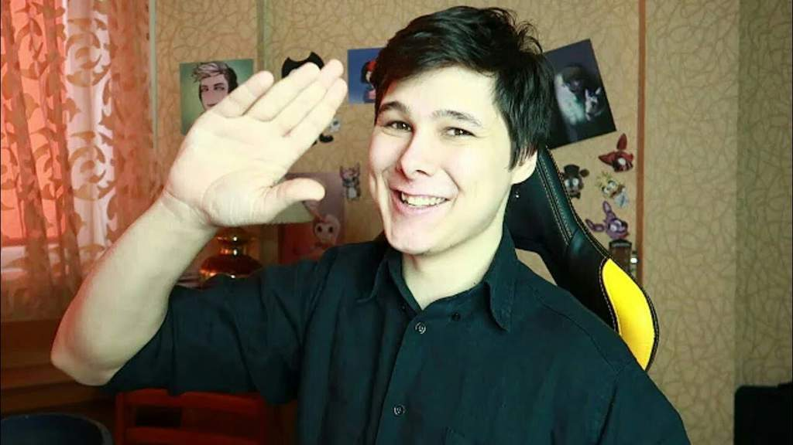
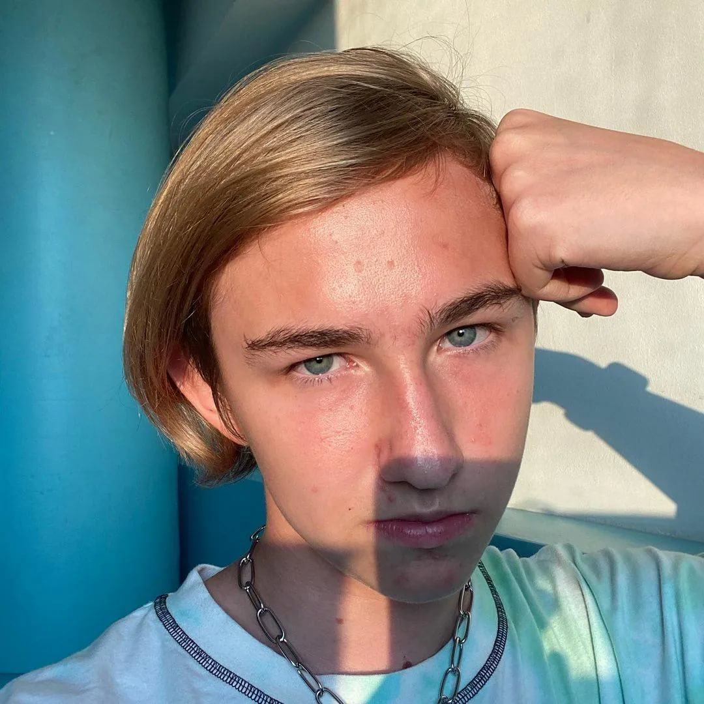

Брайн Мапс

Брайан Мапс родился 25 сентября 1999 года в провинции. Его родной город – Кинель Самарской области. В действительности его зовут Максим Тарасенко, а имя, под которым его знают, всего лишь звучный псевдоним. Информации о раннем детстве известного блогера нигде нет. Нет никаких сведений и о его семье, хотя говорят, что у него есть сестра Олеся.
Брайн мапсWindy31
Windy31 (настоящее имя Андрей Коваль) — известный российский летсплейщик. После окончания 11 класса ушёл учиться в университет на работу своего увлечения — программиста.
Windy31Pat04chek
Всем ПРИВЕТ!Ты попал на канал Pat04Chek!Здесь ты увидишь смешные и интересные ролики на ЛЮБУЮ тематику!Не ищите в этих видео смысла,его нет)Просто улыбнитесь и посмейтесь)
Pat04chekОчкастый Красавчик

Очкастый Красавчик-Самый популярный блогер в Гродно — Андрей Дунай, известный в интернете как «очкастый красавчик». На его канале на YouTube 1,23 млн подписчиков. В среднем видео гродненца набирают по 400 тысяч просмотров. 6 февраля Андрей отметил трехлетие своего канала. За первых 100 тысяч подписчиков гродненец получил серебренную кнопку YouTube в декабре 2018 года, а в сентябре 2019 года он уже имел на своем канале 1 млн подписчиков.
Очкастый Красавчик